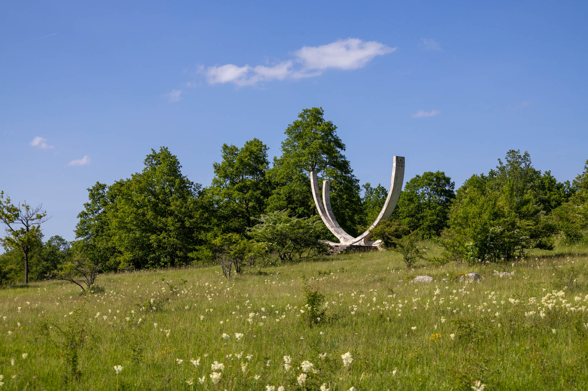
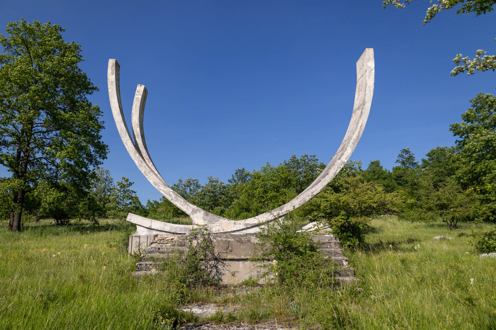
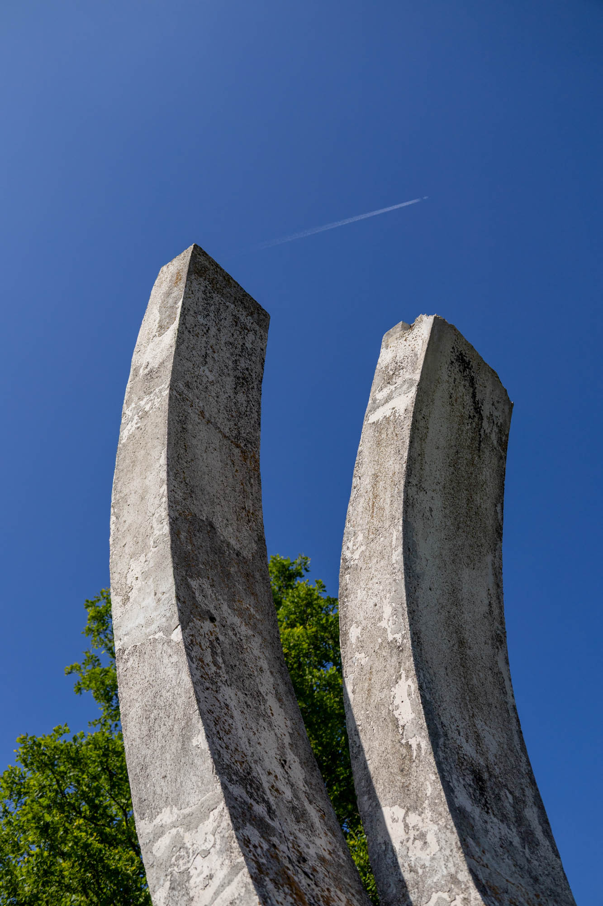
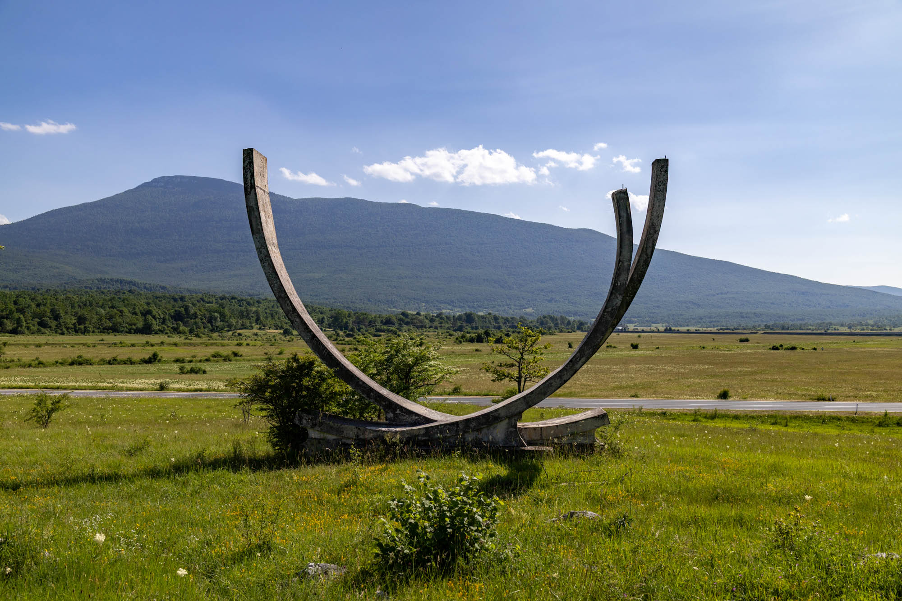

Inspired by the flight paths of two airplanes taking off in opposite directions, this minimalist spomenik remembers the founding of the Partisan Air Force and those who gave their lives in the National Liberation War (World War II).



